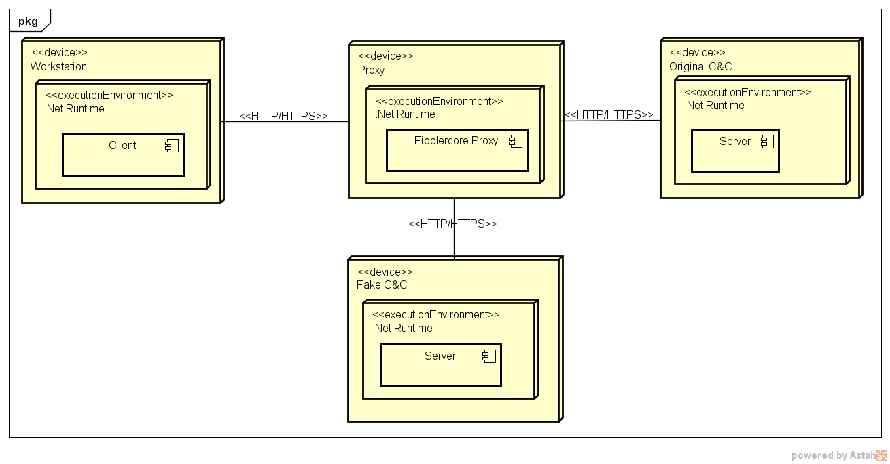

Meeting
3.11.2016
Silvan Adrian
Fabian Binna
Aktueller Stand
- Sprint 3 in Planung
- Prototyping abgeschlossen
- Testumgebung auf Compass Security ELABDEV
Vorgehensweise
- Scrum als Vorgehensmodell
- Inkrementieren anhand der Erkenntnisse, Tests
- Prototypen Evolution
Erkenntnisse und Ergebnisse
- Prototyp V1: Echtzeit Analyse
- FiddlerCore
- Prototyp V2: Zeitversetzte Analyse
- Squid Proxy, ICAP, Elasticsearch, Iptables
Prototyp V1: Echtzeit Analyse
Prototyp V2: Zeitversetzte Analyse

Stand der Planung
- 1. Sprint
- 2 Wochen - Prototype V1
- 2. Sprint
- 3 Wochen - Prototype V2
- 3. Sprint
- In Planung
Erwartetes Ergebnis
- Fish Tank Suite
- Pufferfish
- Mandarinfish
- Triggerfish
- Dashboard
Outlook
- Noch ca. 3 Sprints an 2 Wochen
- Entschlüsselung: Payload des Trojaners
- Design der Fish Tank Suite
- Implementation der Fish Tank Suite